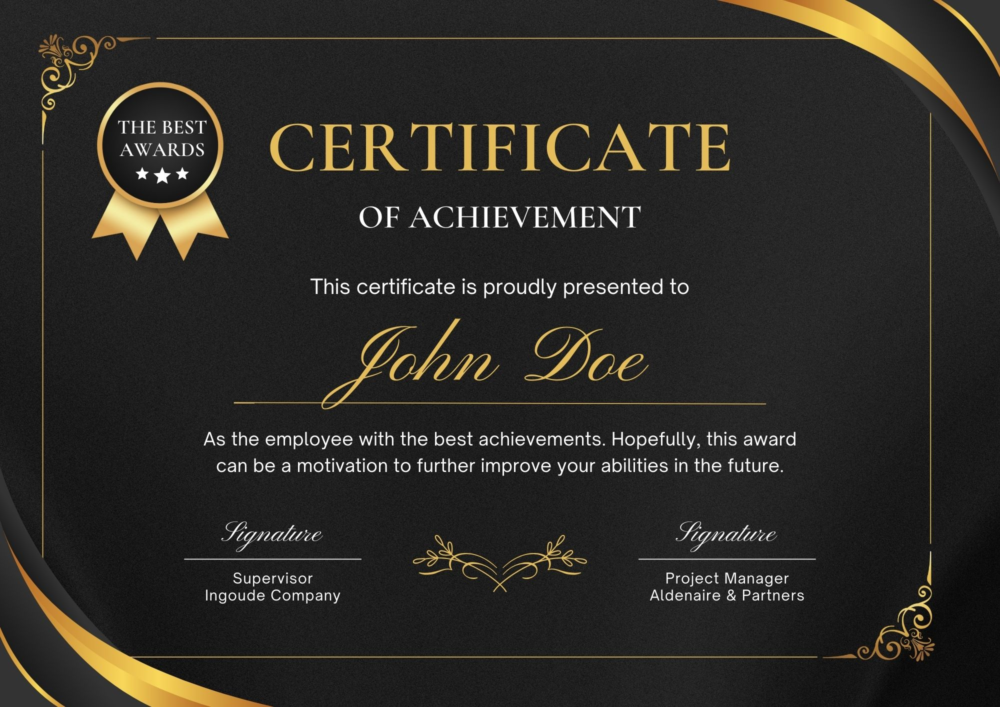
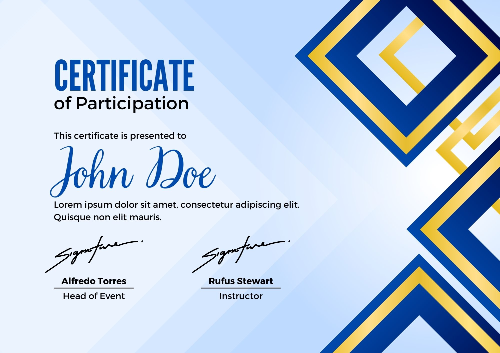
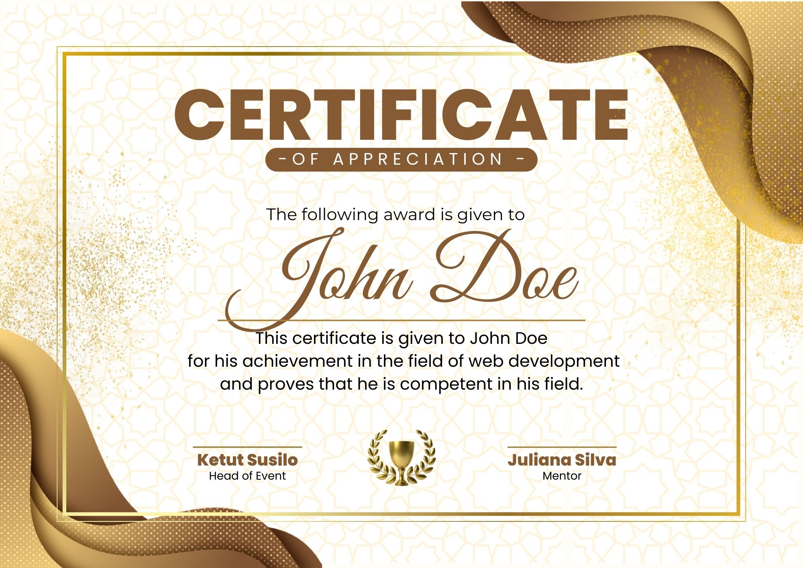
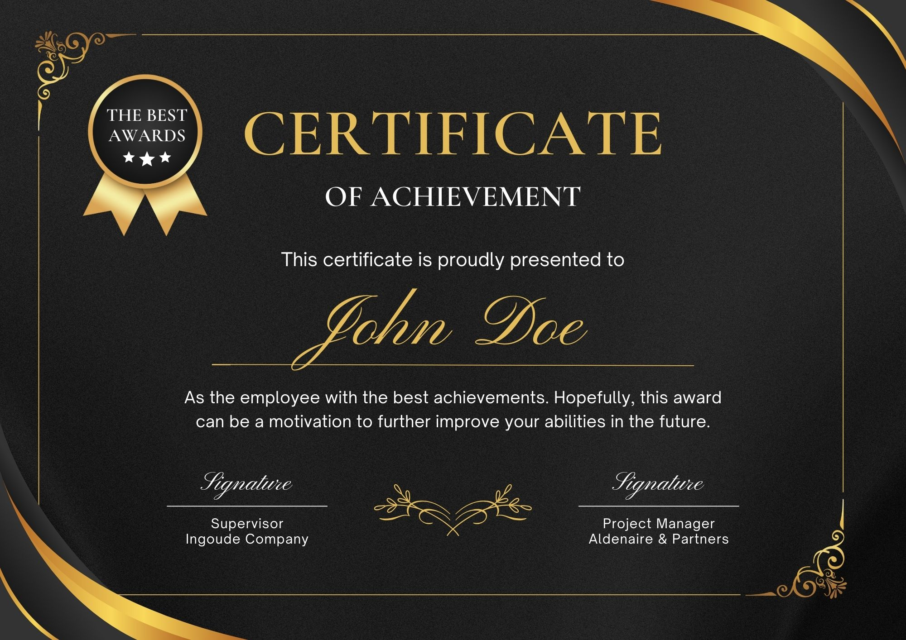
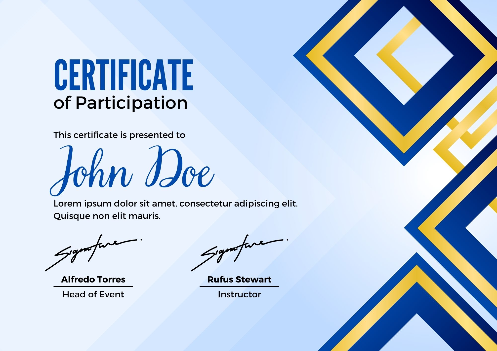
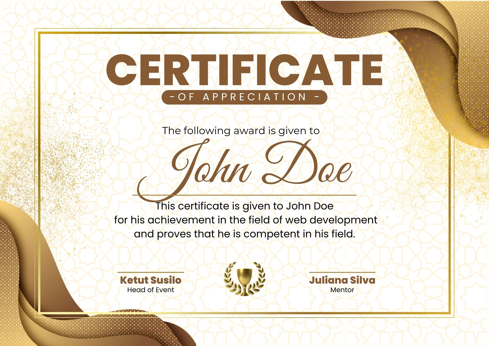

About Me
I'm John Doe, a passionate web developer and designer with over a decade of experience in creating engaging digital experiences. My journey in the world of web development began in 2010, and since then, I've had the privilege of working on a diverse range of projects for clients across various industries. My approach to web development is holistic, combining aesthetics with functionality. I believe that a great website should not only look appealing but also provide an intuitive and seamless user experience. This philosophy guides every project I undertake, ensuring that the end result is not just visually striking but also highly functional and user-friendly.
When I'm not coding, you can find me exploring new web technologies, contributing to open-source projects, or sharing my knowledge through tech blogs and community meetups. I'm always eager to take on new challenges and push the boundaries of what's possible in web development.
Hobbies & Interests
These activities not only provide me with relaxation and enjoyment but also inspire creativity and foster a well-rounded perspective. I find joy in exploring diverse interests that enrich my life and complement my professional journey.
Services
I offer a range of professional services designed to meet your unique needs and help you achieve your goals. Whether you're looking to build a stunning website, create captivating designs, or develop a comprehensive digital strategy, I am here to assist you. My core services include:
Custom Website Development
Tailored solutions to meet your unique business needs.
Responsive Web Design
Ensuring your site looks great on all devices.
E-commerce Solutions
From small shops to large online stores.
Content Management Systems
Easy-to-use systems for managing your content.
Web Application Development
Complex web apps with robust functionality.
Website Maintenance and Support
Keeping your site up-to-date and secure.
Performance Optimization
Improving load times and overall site performance.
SEO Integration
Enhancing your site's visibility in search engines.
Skills
Over the course of my career, I have developed a diverse set of skills that enable me to deliver high-quality work across various domains. My key skills include:
Featured Projects
Throughout my career, I have had the privilege of working on a diverse range of projects that showcase my skills, creativity, and dedication to excellence. Below are some of the standout projects that highlight my ability to deliver high-quality results.
E-commerce Platform
Developed a fully responsive e-commerce platform using React and Node.js, featuring secure payment integration and a custom CMS. This project showcases my ability to create complex, scalable web applications that handle high traffic and sensitive user data.
Social Media App
Created a social media application with real-time messaging and notification features. Built with React and Firebase, this project demonstrates my skills in developing interactive and engaging user interfaces.
Portfolio Website
Designed and developed a personal portfolio website to showcase my projects and skills. Utilized HTML, CSS, and JavaScript to create a visually appealing and user-friendly site.
Blog Platform
Built a blog platform with a rich text editor and user authentication using Django. This project highlights my backend development skills and ability to create secure and functional web applications.
Weather App
Developed a weather forecasting app using API integration with real-time data. This project demonstrates my ability to work with external APIs and display dynamic data to users.
Task Management Tool
Created a task management tool with features like project boards, task assignments, and deadlines. Built with Vue.js and Node.js, this project showcases my full-stack development skills.
Awards & Recognition
Over the course of my career, I have been honored to receive numerous accolades that highlight my dedication, creativity, and expertise in my field. These awards are a testament to the hard work and innovative solutions I bring to every project. Each recognition not only motivates me to strive for excellence but also reinforces my commitment to delivering exceptional results for my clients.
 





Professional Experience
Over the years, I have amassed a wealth of experience working in various roles that have honed my skills and broadened my expertise. My professional journey includes:
Senior Web Developer
TechInnovate Solutions, 2018 - Present
Lead developer on multiple high-profile projects, mentoring junior developers, and implementing best practices in web development.
Full Stack Developer
WebCraft Agency, 2014 - 2018
Developed and maintained various client websites and web applications, focusing on responsive design and performance optimization.
Junior Web Developer
DigitalDream Studios, 2010 - 2014
Started my career working on front-end development and gradually transitioned to full-stack roles, gaining experience in various technologies and frameworks.
Educational Background
This academic background has provided me with the theoretical framework and practical skills necessary to excel. Additionally, I continue to pursue professional development opportunities to stay abreast of industry trends and innovations.
Master of Science in Computer Science
Stanford University, 2008 - 2010
Specialization in Web Technologies and Human-Computer Interaction
Bachelor of Science in Software Engineering
Massachusetts Institute of Technology, 2004 - 2008
Minor in User Experience Design
Client Testimonials
The feedback from my clients speaks volumes about my dedication, expertise, and ability to deliver exceptional results.


Latest from the Blog
Stay updated with my latest insights and industry trends. My blog aims to provide valuable information and perspectives that can benefit your projects and initiatives. Dive into the latest post to discover actionable strategies and innovative ideas.
The Future of Web Development: Trends to Watch
In this post, we explore emerging technologies and methodologies that are shaping the future of web development...
Read More
Optimizing Website Performance: A Developer's Guide
Learn about the latest techniques and tools for improving website speed and user experience...
Read More
Get in Touch
Interested in working together or have a project in mind? I'd love to hear from you! Feel free to reach out through any of the following channels: